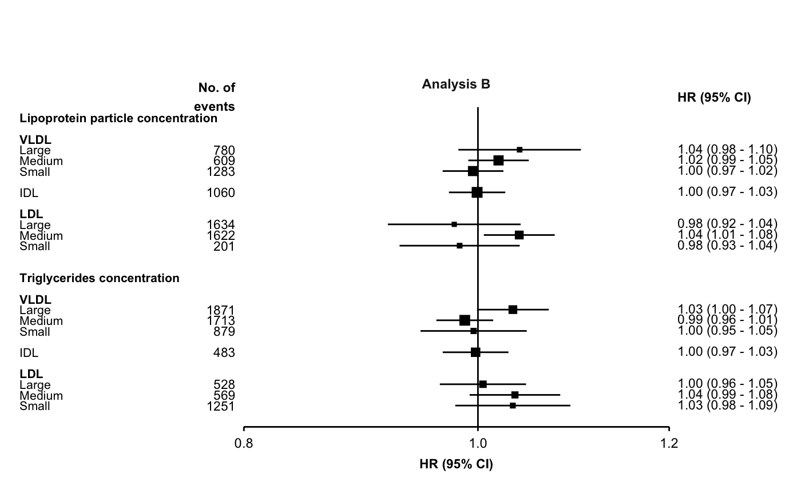

Different limits and ticks on each plot
The make_forest_plot function uses ggplot facets to place forest plots side-by-side. Facets cannot easily have different scales (or limits or ticks) applied, so it’s not directly possible to have different limits and ticks on each forest plot.
However, one approach to work around this is to use make_forest_plot for each plot you need, remove the labels from all but the first, then arrange them side-by-side. The gridExtra package can be used for this last step.
Step 1: Use make_forest_plot for each plot.
set.seed(57911624) exampleresults <- function(){ data.frame(variable = c('nmr_l_vldl_p', 'nmr_m_vldl_p', 'nmr_s_vldl_p', 'nmr_idl_p', 'nmr_l_ldl_p', 'nmr_m_ldl_p', 'nmr_s_ldl_p', 'nmr_l_vldl_tg', 'nmr_m_vldl_tg', 'nmr_s_vldl_tg', 'nmr_idl_tg', 'nmr_l_ldl_tg', 'nmr_m_ldl_tg', 'nmr_s_ldl_tg', 'nmr_l_vldl_c', 'nmr_m_vldl_c', 'nmr_s_vldl_c', 'nmr_idl_c', 'nmr_l_ldl_c', 'nmr_m_ldl_c', 'nmr_s_ldl_c'), estimate = rnorm(21, 0, 0.02), stderr = 0.012 + abs(rnorm(21, 0, 0.015)), n = round(runif(21, 100, 2000)), nb = round(runif(21, 100, 2000))) } resultsA <- exampleresults() resultsB <- exampleresults() resultsC <- exampleresults() resultsD <- exampleresults() resultsE <- exampleresults() headings <- data.frame(heading1 = rep(c("Lipoprotein particle concentration", "Triglycerides concentration", "Cholesterol concentration"), each = 7), heading2 = rep(c("VLDL", "VLDL", "VLDL", "IDL", "LDL", "LDL", "LDL"), times = 3), heading3 = rep(c("Large", "Medium", "Small", NA, "Large", "Medium", "Small") , times = 3), variable = c('nmr_l_vldl_p', 'nmr_m_vldl_p', 'nmr_s_vldl_p', 'nmr_idl_p', 'nmr_l_ldl_p', 'nmr_m_ldl_p', 'nmr_s_ldl_p', 'nmr_l_vldl_tg', 'nmr_m_vldl_tg', 'nmr_s_vldl_tg', 'nmr_idl_tg', 'nmr_l_ldl_tg', 'nmr_m_ldl_tg', 'nmr_s_ldl_tg', 'nmr_l_vldl_c', 'nmr_m_vldl_c', 'nmr_s_vldl_c', 'nmr_idl_c', 'nmr_l_ldl_c', 'nmr_m_ldl_c', 'nmr_s_ldl_c')) forestplot1 <- make_forest_plot(headings = headings, rows = c("Lipoprotein particle concentration", "Triglycerides concentration"), cols = list(resultsA), exponentiate = TRUE, colnames = c("Analysis A"), col.key = "variable", ci.delim = " - ", xlim = c(0.9, 1.1), xticks = c(0.9, 1, 1.1), blankrows = c(1, 1, 0, 1), scalepoints = TRUE, pointsize = 3, col.left = c("n"), col.left.space = c(0.02), col.left.heading = c("No. of\nevents"), col.right.space = 0.02, heading.space = 2, plot.space = 8) #> Warning: Vectorized input to `element_text()` is not officially supported. #> Results may be unexpected or may change in future versions of ggplot2.

forestplot2 <- make_forest_plot(headings = headings, rows = c("Lipoprotein particle concentration", "Triglycerides concentration"), cols = list(resultsB), exponentiate = TRUE, colnames = c("Analysis B"), col.key = "variable", ci.delim = " - ", xlim = c(0.8, 1.2), xticks = c(0.8, 1, 1.2), blankrows = c(1, 1, 0, 1), scalepoints = TRUE, pointsize = 3, col.left = c("n"), col.left.space = c(0.02), col.left.heading = c("No. of\nevents"), col.right.space = 0.02, heading.space = 2, plot.space = 8) #> Warning: Vectorized input to `element_text()` is not officially supported. #> Results may be unexpected or may change in future versions of ggplot2.

Step 2: Remove the axis text for all but the first plot.
p1 <- forestplot1$plot p2 <- forestplot2$plot + theme(axis.text.y = element_blank())
Step 3: Arrange the plots using gridExtra (there may be other packages that also work). Adjust widths until the plots are the desired widths in your final output file.
gridExtra::grid.arrange(p1, p2, ncol=2, widths = c(1,0.55))

Note that if scalepoints = TRUE, then this scaling is on a plot-by-plot basis so box sizes are not comparable between plots. However, if different axis scales are used then confidence intervals are not comparable either so this may be not be a problem.